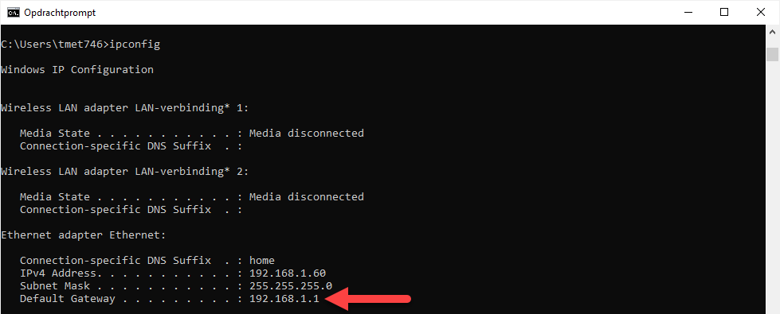

Beeld je in dat je een brief moet versturen naar iemand in een andere gemeente. Op de brief noteer je het adres van de ontvanger en je ziet meteen dat de brief niet bestemd is voor iemand die in je eigen huis woont.
Je besluit om de brief binnen te brengen naar het dichtstbijzijnde postkantoor. In het postkantoor bekijkt men het adres en daar ziet men dat de ontvanger niet binnen de gemeente is dus deze wordt op zijn beurt doorgestuurd naar het verdeelcentrum. In het verdeelcentrum wordt deze naar de gemeente van de ontvanger gestuurd en van daaruit wordt de brief door de lokale postbode bezorgd.
Als we nu bovenstaande opnieuw formuleren dan moet een computer een pakket versturen naar een bepaald IP adres. Dat IP adres ligt niet in het lokaal netwerk dus besluit de computer om het pakket door te sturen naar de default gateway. Dat is de router. De router ziet op zijn beurt dat hij niet rechtstreeks is aangesloten met het netwerk van de ontvanger dus besluit hij om het door te sturen naar zijn eigen default gateway (de router van de Internet Service Provider). Het netwerk van de ISP is wel in staat om het pakket dichter bij de bestemmeling te brengen en uiteindelijk komt het dan ook aan in het netwerk van de ontvanger.
De default gateway is het IP adres naar waar een pakket wordt gestuurd als een computer of router niet weet hoe het pakket moet bezorgd worden.

Als je niet van plan bent om te communiceren met apparaten buiten het netwerk dan hoef je geen default gateway in te vullen.